力场启发的扩散模型
本文将介绍两篇论文，巧妙地通过力场的思想去构建扩散模型。出品自MIT，作者包括KAN一作刘子鸣等，（但对于KAN那篇，个人认为噱头大于实用性。）
《Poisson Flow Generative Models》NIPS22
《PFGM++: Unlocking the Potential of Physics-Inspired Generative Models》ICCML2023
论文引入
前两篇分别介绍了DDPM和BFN，它们尽管采用了不同的（加噪）方式，但围绕着同一个主题，从一个熟悉的分布到数据分布的相互转换。
PFGM也是如此，但不同的是，它采用的不是高斯分布而是物理上的性质。
即在超平面中由（几乎）任何分布生成的泊松场在足够远的距离处会产生均匀的角分布。
或者通俗地讲，无穷远处的多源引力场，等价于位于质心、质量叠加的质点引力场。
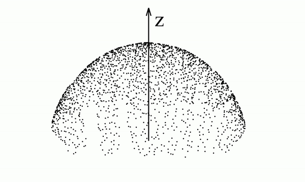
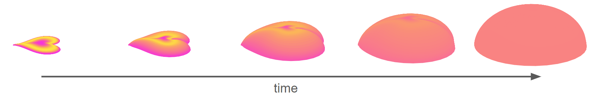
如果我们知道由分布产生的电场（即泊松场），那么我们可以从半球上均匀采样的点开始，在反向时间中运行动力学（沿着电场线运动），以恢复原始数据分布。
电场的力可以写为
$$
F(x,y)=\frac{-1}{S_{N-1}(1)}\frac{x-y}{||x-y||^N}
$$
其中$S_{}(1)$是d维单位超球面的表面积，这个式子是d维poisson方程的格林函数的梯度，所以也被称为poisson场。
$$
G(x,y)=\frac{1}{(N-2)S_{N-1}(1)}\frac{1}{||x-y||^{N-2}}
$$
模式坍塌
在将这一特性使用进我们的模型之前，我们要解决一个重要的事情——模式坍塌。
即，比如3维的情况下，球壳内部场强为0。这时候就让我们无法到达理想的样本。
作者想了一个妙招，即增加一维，尽管我在d维下可能有一些数据点达不到，但是我可以增加一维通过额外的维度绕过去以采样我想要的数据点。记新增的维度为z。
定律应用
但是我们的数据是d维的，所以论文采用狄拉克函数以映射会d维。
我们计算分布产生的场：
我们实际上并不关心场强度，只关心方向。（相当于我们只关心正确的路径，不关心速度和加速度，速度和加速度我们可以自己配置。）
为了更好地训练，我们对场进行规范化：
伪代码如下：
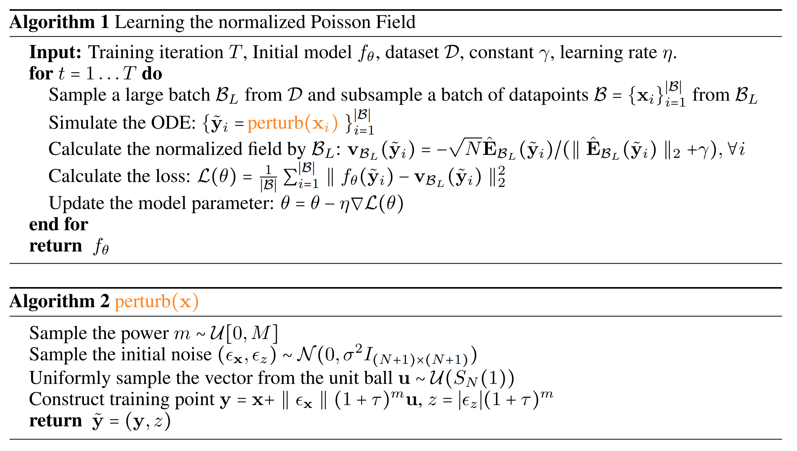
可以发现，伪代码还有个perturb，看上去很诡异，让人摸不着头脑。
苏神在它的博客中给出了这一点是如何得到的。
定义起点和终点
场强定义为$E=\frac{dx}{dt}$，则我们可以反向常微分方程以采样$d\hat x=v(\hat x)dt$
我们定义为终点为到达z=0。
$$
d(x,z)=(\frac{dx}{dt}\frac{dt}{dz}dz,dz)=(v(x)_xv(x)_z^{-1},1)dz
$$
在半球上均匀采样并使用得到的 z 分量作为常微分方程的起始点，这很容易。但是存在一个小问题。许多常微分方程求解器要求整个批次具有相同的初始值。位于半球上的点具有许多不同的 z 值，这带来了一些小障碍。
为绕过这个问题，将半球上的均匀分布投影到与半球顶部重合的超平面 zmax 上。由于泊松场在 x 趋向于无穷大时是纯径向的，因此投影是一个简单的径向投影。下面是一个 2D 示意图，其中红色线条连接球面上的紫色点到绿色线上的投影点。
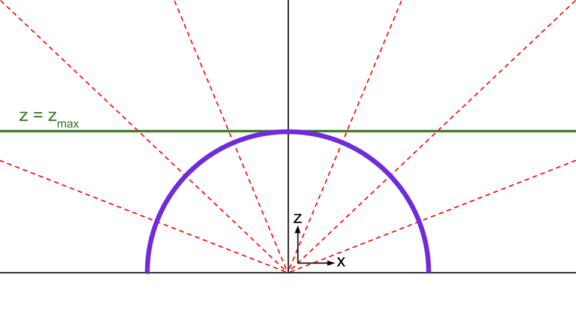
如红线所框住位置，几乎是平行的。
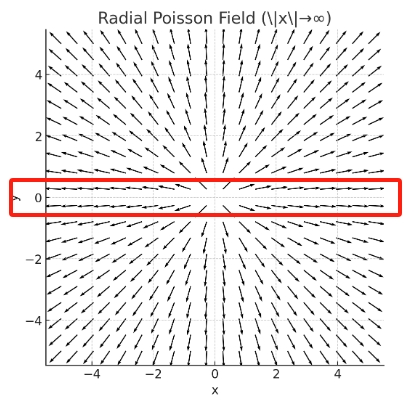
初始分布可写为：
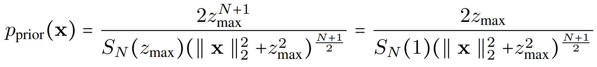
此处推导（来自苏神）：
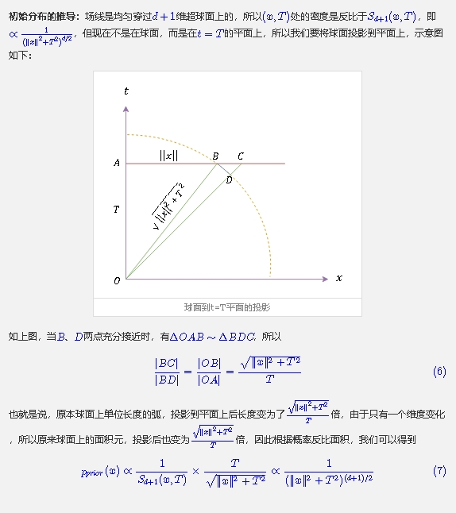
我们换成超球坐标即有
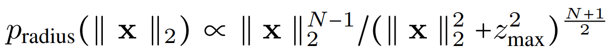
即$dV=r^{N-1}dr\times d\Omega$
进一步改进
一个很自然的想法是从增加一维到任意维度，给模型更多多样性的空间。
PFGM++就是这样做的，还证明了当D接近无穷的时候则是DDPM。
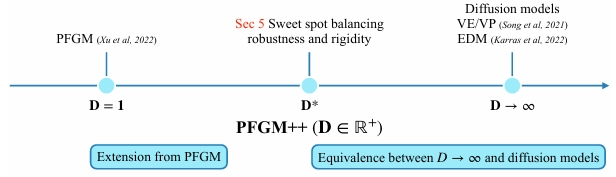
我们继续沿用PFGM的算法，$\hat x=[x,z]^T$，其中$z\in R^D$，则N+D维空间中的场为：
$$
E(\hat x)=\int \frac{1}{S_{N+D-1}(1)}\frac{\hat x-\hat y}{||\hat x-\hat y||^{N+D}}p(\hat y)d\hat y
$$
但由于这时候z是多维的，我们要把它转换为一维。
我们注意到，由于对称性：
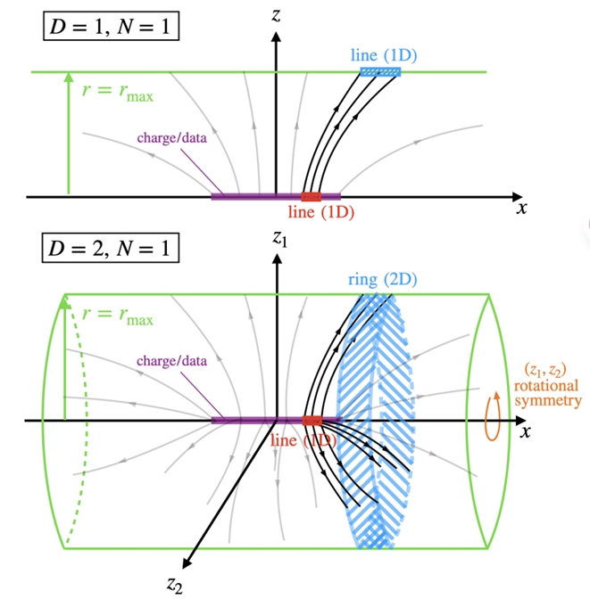
所以我们可以使用离超柱面r的距离r来替代z（类似柱坐标系）。$\sum z_i^2=r^2$。
我们重新记为$\hat x=[x,r]^T$，这时候r就是1维的了。
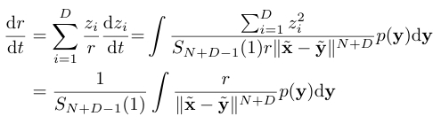
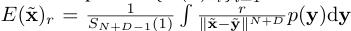
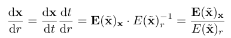
并且在$r_{max}\to \infty $，
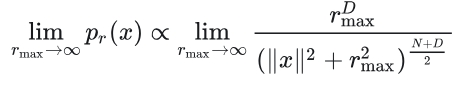
损失函数
如果我们继续沿用PFGM的，则为：
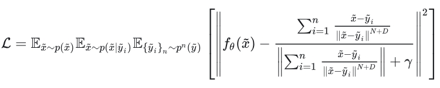
作者认为，继续沿用会有较大的开销，且是有偏估计。所以换了一种。
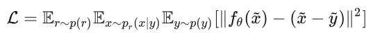
$p_r(x)$代表一种前向过程，令其为：
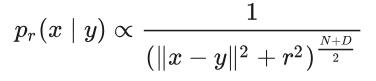
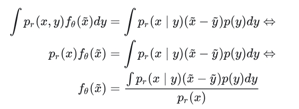
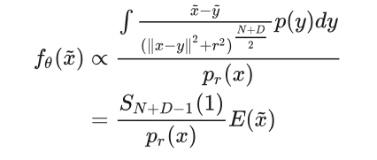
我们可以归一化以保证稳定。
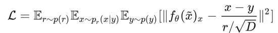
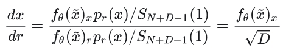
如何和DDPM等模型联系起来
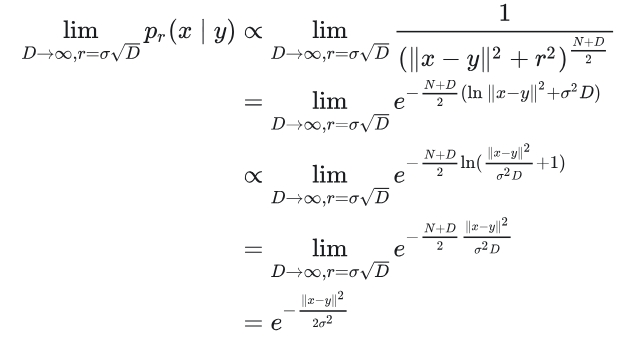
可以看出其余有高斯噪声的形式。
额外阅读
https://kexue.fm/archives/9370
参考资料
https://www.assemblyai.com/blog/an-introduction-to-poisson-flow-generative-models